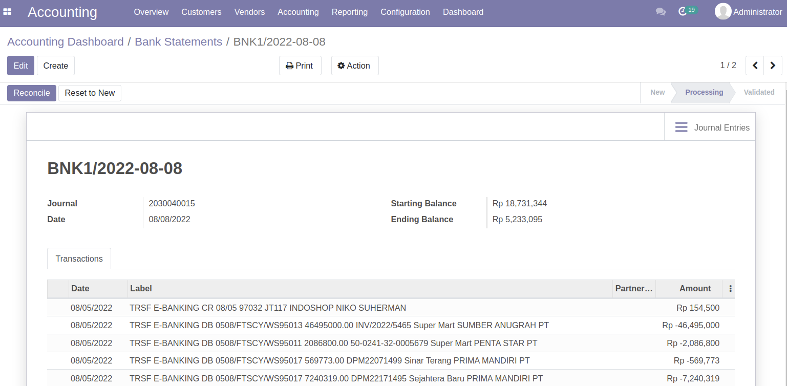
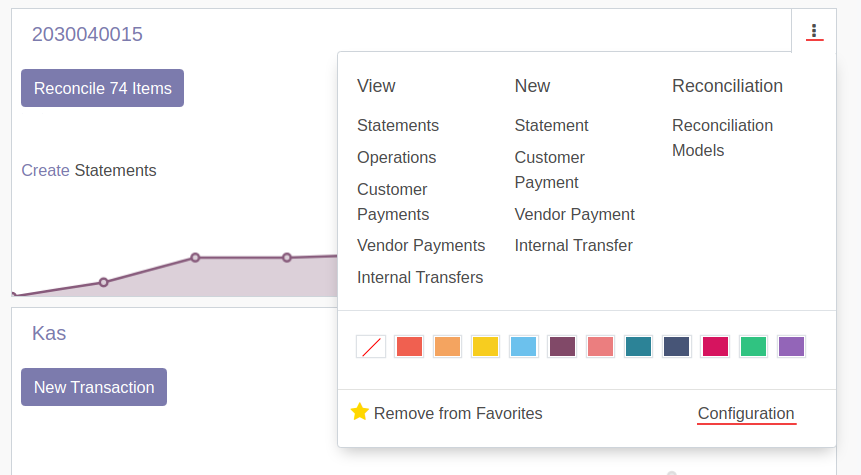
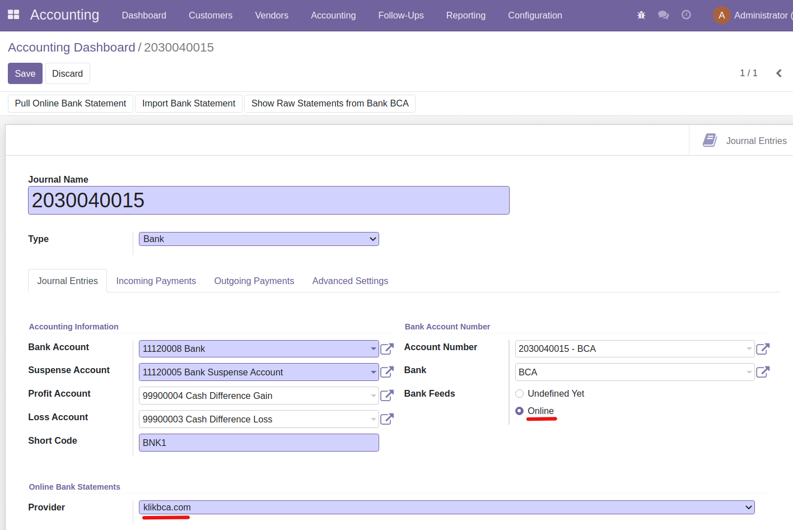
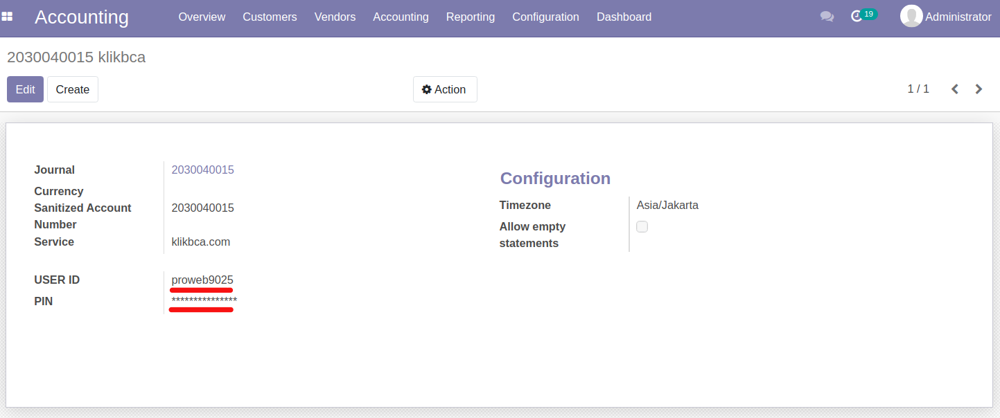
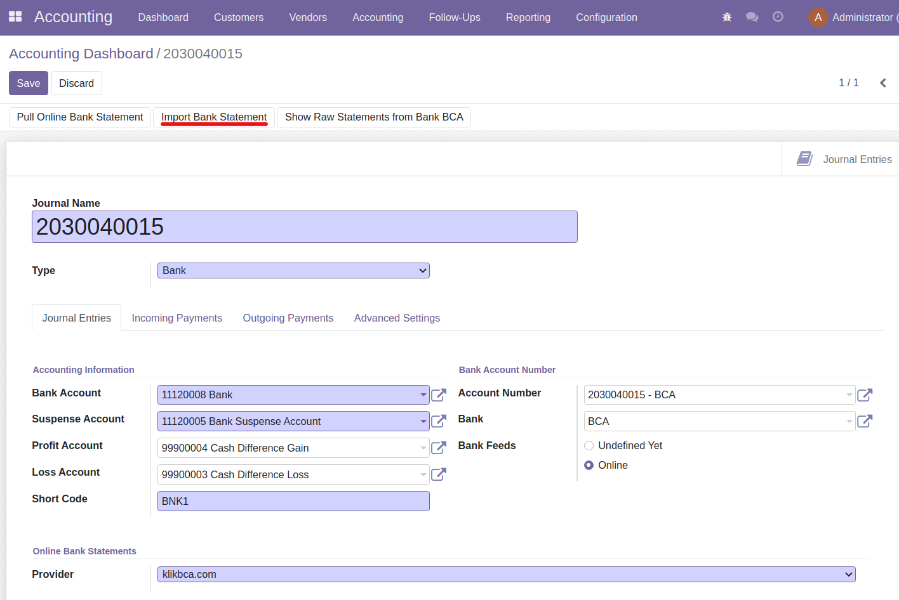
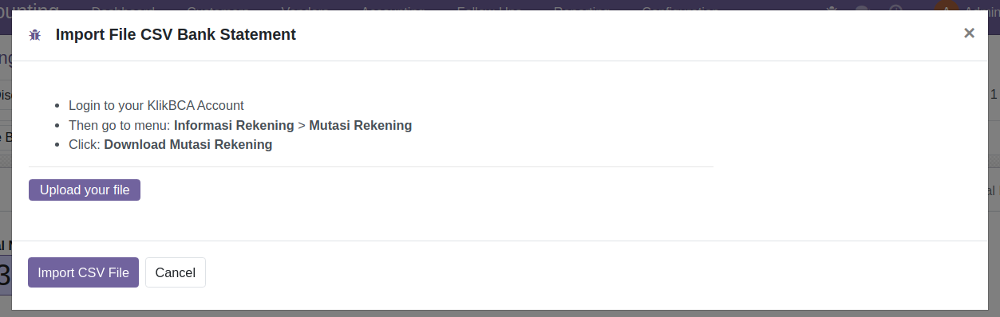
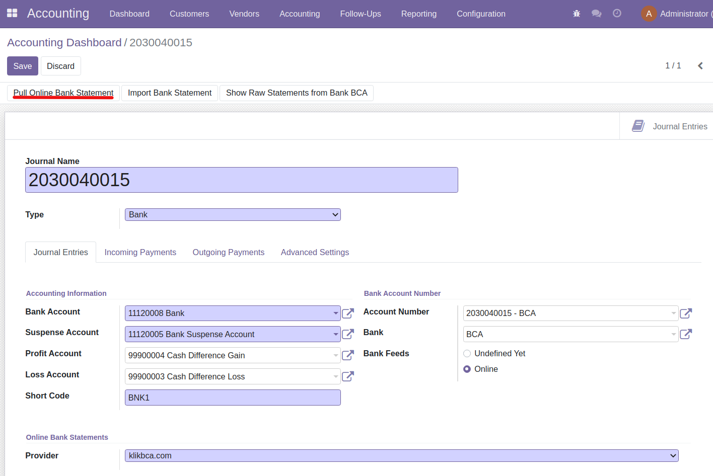
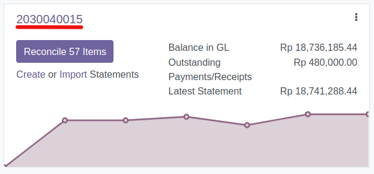
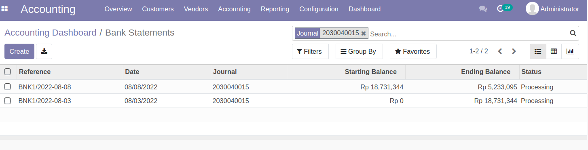

This module can be used for Bank BCA Individual online bank account synchronization. Also this module can import .csv file for Bank BCA Individual and Enterprise bank account.
It enables user to link bank journals to their KlikBCA bank accounts for online synchronization of their bank statements to get bank feeds directly in odoo.
This module can synchronize online only for Individual KlikBCA bank account. This module also can import .csv file for Individual & Enterprise BCA bank account.

1. Go to BCA bank journal configuration

Note: Previously you need to have a BCA bank journal
Go to Accounting Overview Menu (Dashboard).
On the BCA bank journal on top right menu klik configuration.
2. Configure Online Bank Statements

On Bank Feeds choose Online
Then Online Bank Satements will be appear, on Provider choose klikbca.com.
Click Save.
3. Configure USER ID and Internet Banking PIN

After saved then On Online Bank Statement - Provider click klikbca.com, then it will appear klikbca configuration
Type your User ID
Type your Internet Banking PIN
Then Save
Configuration complete, then go back to the BCA bank journal
4. Import Bank Statement

Click Import Bank Statement to import .csv file of Individual & Enterprise Bank BCA Account and then create a bank statement.

Get .csv file from your KlikBCA internet banking, click Upload your file to upload your .csv file, then click Import CSV File to proceed
5. Get klikbca bank statement.

Klik Pull Online Bank Statement to get online data and then create a bank statement.
After success getting bank statement, you can post that bank statement then reconcile it with bill or invoice payment transactions.
Note:
6. How to show all BCA Bank statements

On Accounting Overview (Dashboard) klik Bank BCA Journal Name

Then it will appear all bank statements
Note:
You can reach us